01
สามวันบน
ดอยทูเล-จอวาเล
เดินขึ้นดอยทูเล-จอวาเลท่ามกลางหมอกและสายฝน สูง 1,360 เมตร กับเพื่อนร่วมทางที่ไม่รู้จักคำว่าถอย ผ่านทุ่งหญ้า ป่าหมอก จนถึงยอดที่มองเห็นทะเลหมอกสุดลูกหูลูกตา
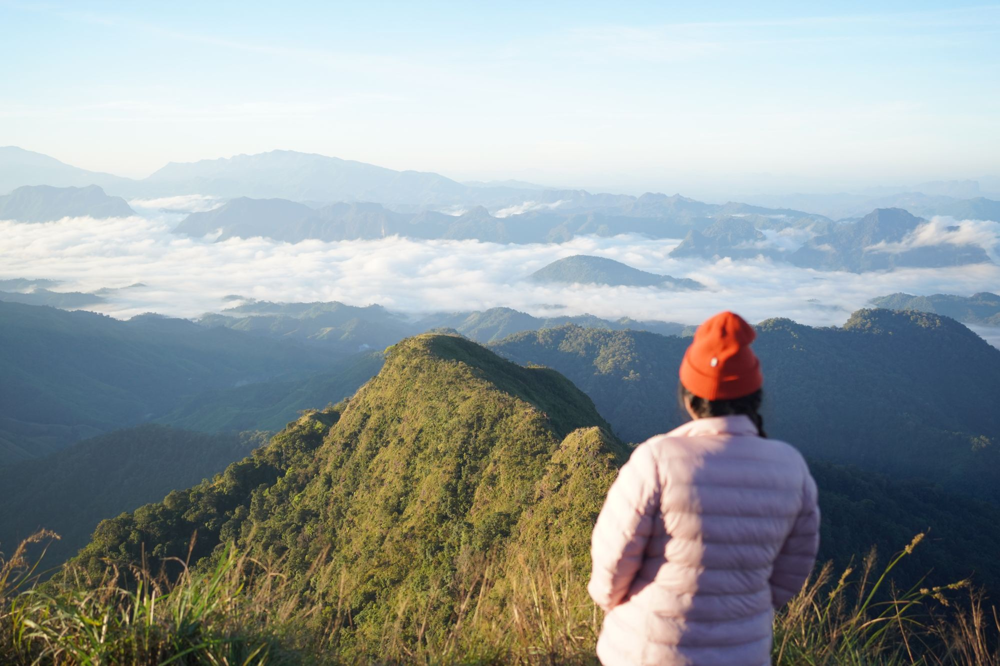
บันทึกเส้นทาง ภาพถ่าย และความทรงจำเล็กๆ จากการเดินทางจริง ทีละก้าว ทีละที่
อ่านตอนล่าสุด →เดินขึ้นดอยทูเล-จอวาเลท่ามกลางหมอกและสายฝน สูง 1,360 เมตร กับเพื่อนร่วมทางที่ไม่รู้จักคำว่าถอย ผ่านทุ่งหญ้า ป่าหมอก จนถึงยอดที่มองเห็นทะเลหมอกสุดลูกหูลูกตา
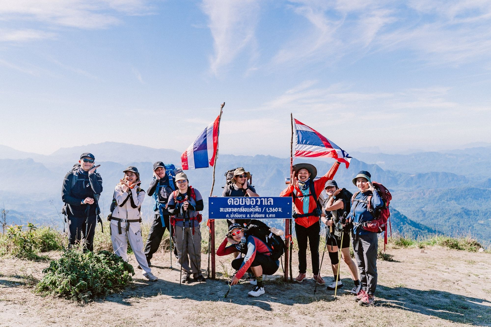
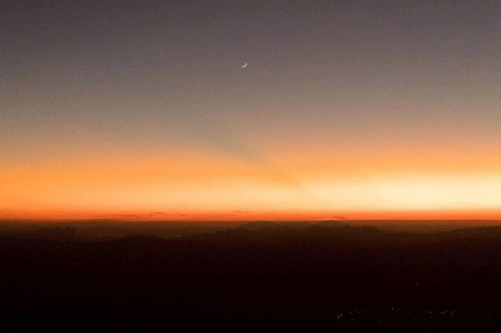
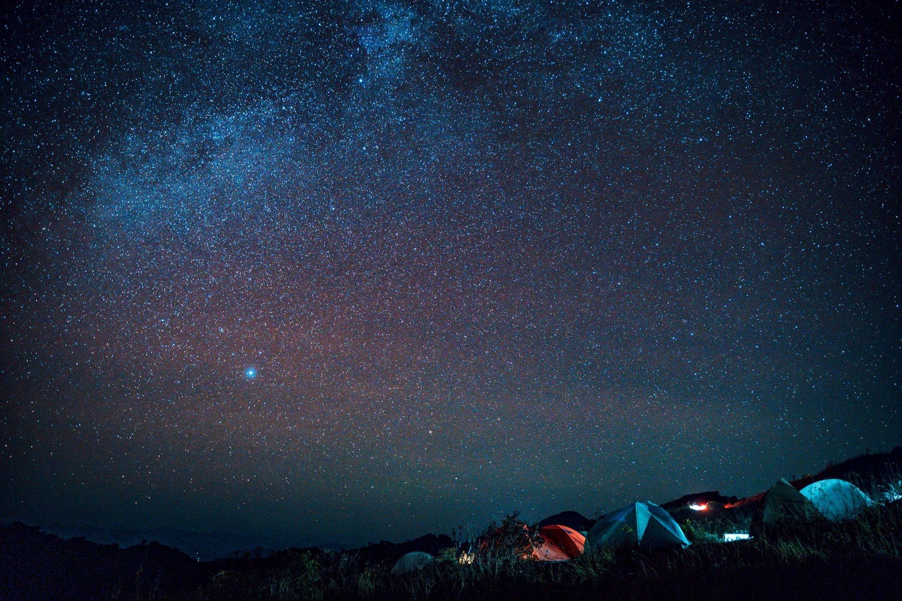
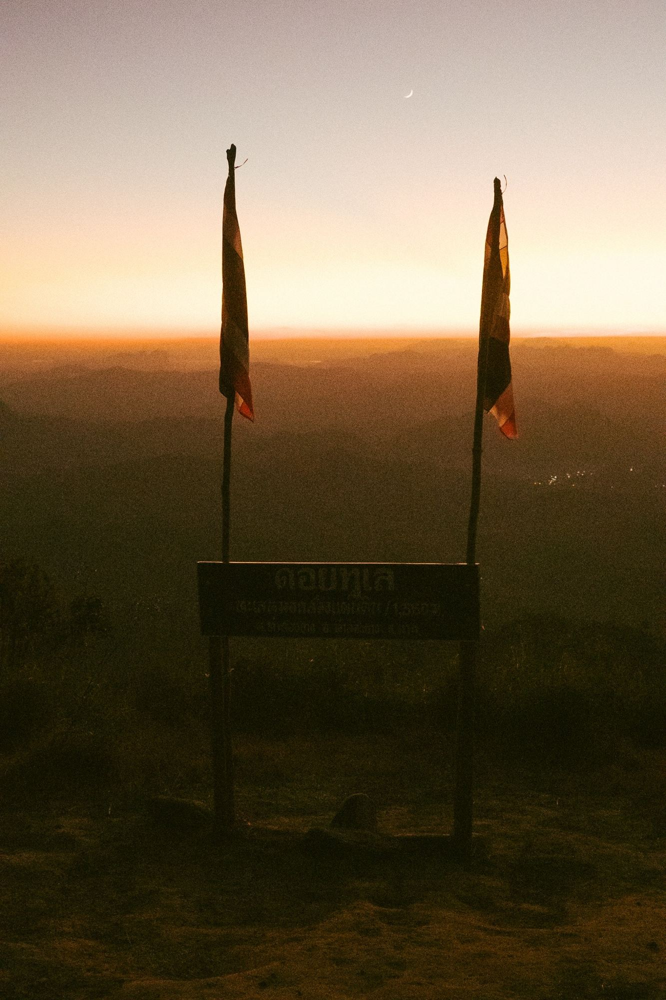
เมื่อพระอาทิตย์ตกที่สันเขา ทุกอย่างที่รีบร้อนมาทั้งวันก็หายไป เหลือแค่ลมเย็นๆ กับเสียงเงียบที่ไม่น่ากลัวเลย
“จะไปเดินป่าที่ไหนดี?” กลายเป็นทริปจัดเองครั้งแรกของ 5 คนเพื่อน ขึ้นดอยห้วยทู่หน้าฝน เดิน 6 ชั่วโมงฝ่าหมอกขาวโพลน — พร้อมสรุปเส้นทางและค่าใช้จ่ายจริงให้ครบ
อ่านเรื่องเต็ม →


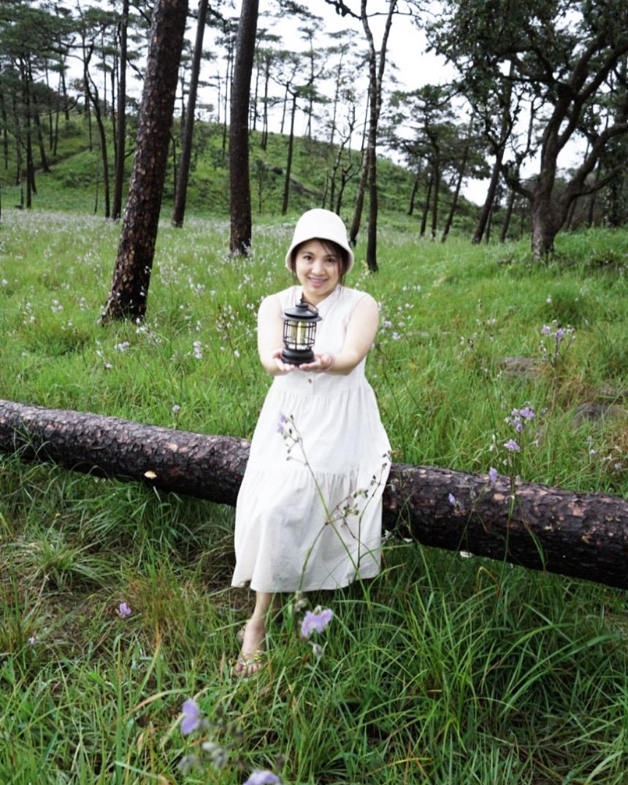
เดินขึ้นเขาสองวันเต็ม ผ่านป่าดิบและลานสนกว้างสุดลูกหูลูกตา กางเต็นท์นอนท่ามกลางหมอกบางๆ คืนที่นอนกลางลานสน มีแค่แสงจันทร์เสี้ยวกับดาวเต็มฟ้า แล้วตื่นมาเจอทุ่งดอกไม้ป่าบานสะพรั่งรอบเต็นท์ ความเงียบแบบนี้คือของขวัญที่ดอยนี้ให้เสมอ
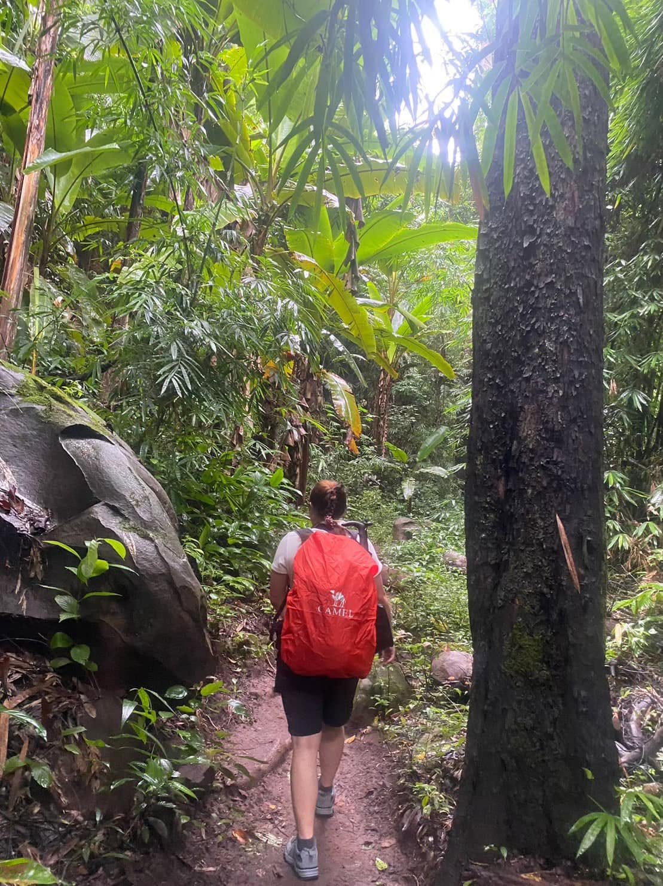
ช่วงแรกเป็นป่าดิบชื้น ต้นไม้สูงปิดฟ้า เดินขึ้นเนินยาวจนขาล้า แต่ทุกก้าวคือการเข้าใกล้ลานสนที่รออยู่ข้างบน
ลานสนกว้างสุดลูกหูลูกตา หมอกบางๆ ที่ไหลผ่านสันเขา และทุ่งดอกไม้ป่าสีม่วงที่บานรับสายลมเย็น
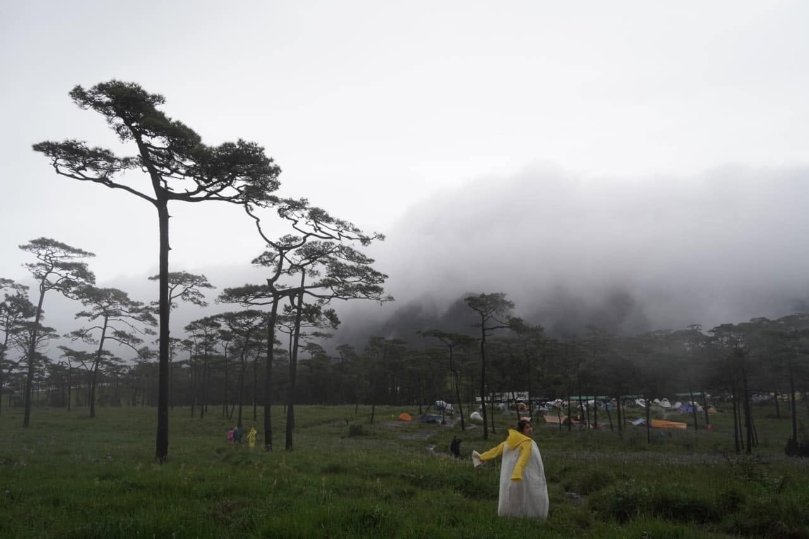
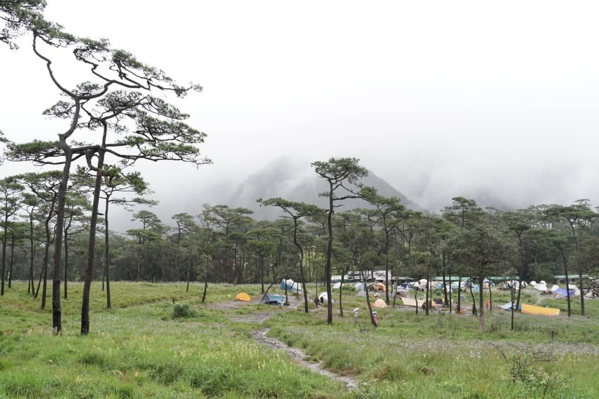
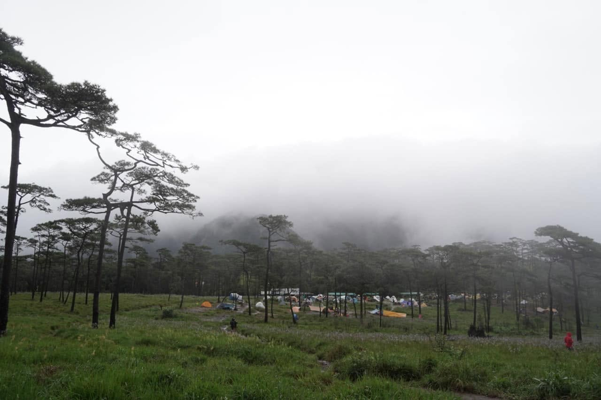
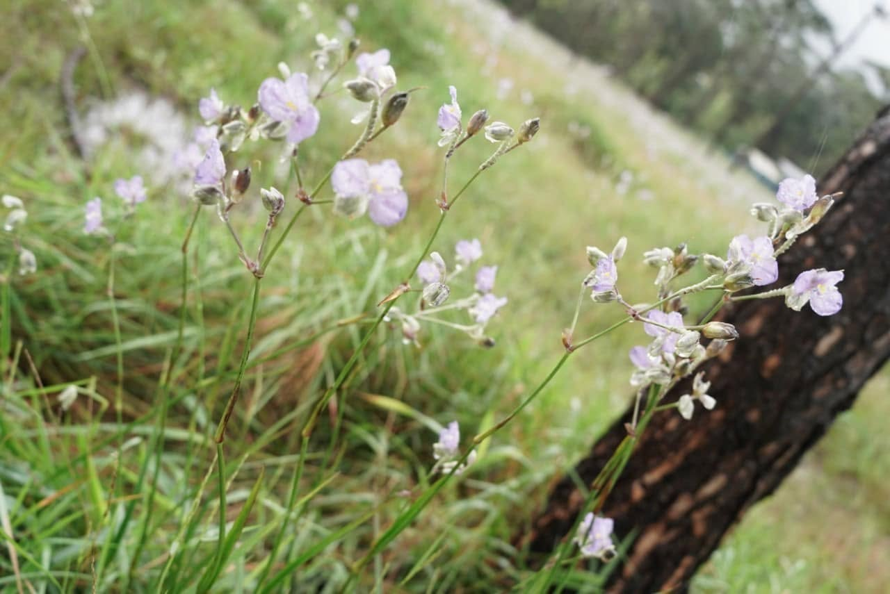
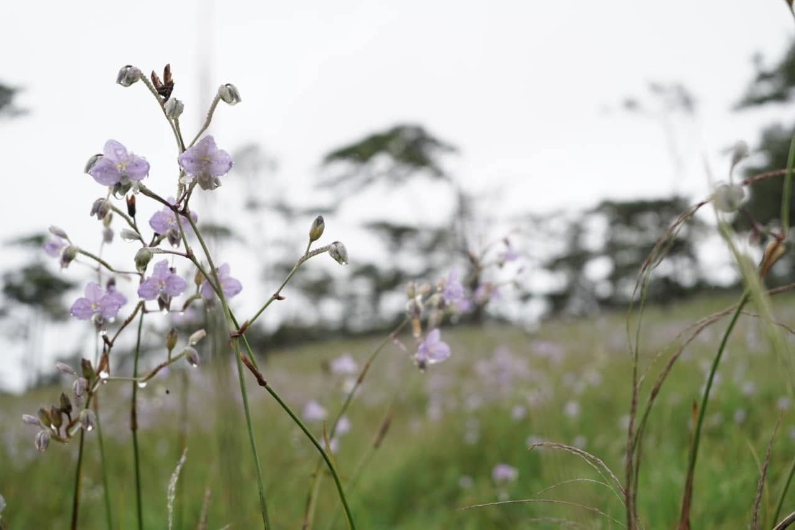
ทุกโพสต์มีรายละเอียดที่ใช้วางแผนทริปได้จริง ไม่ใช่แค่เล่าเฉยๆ
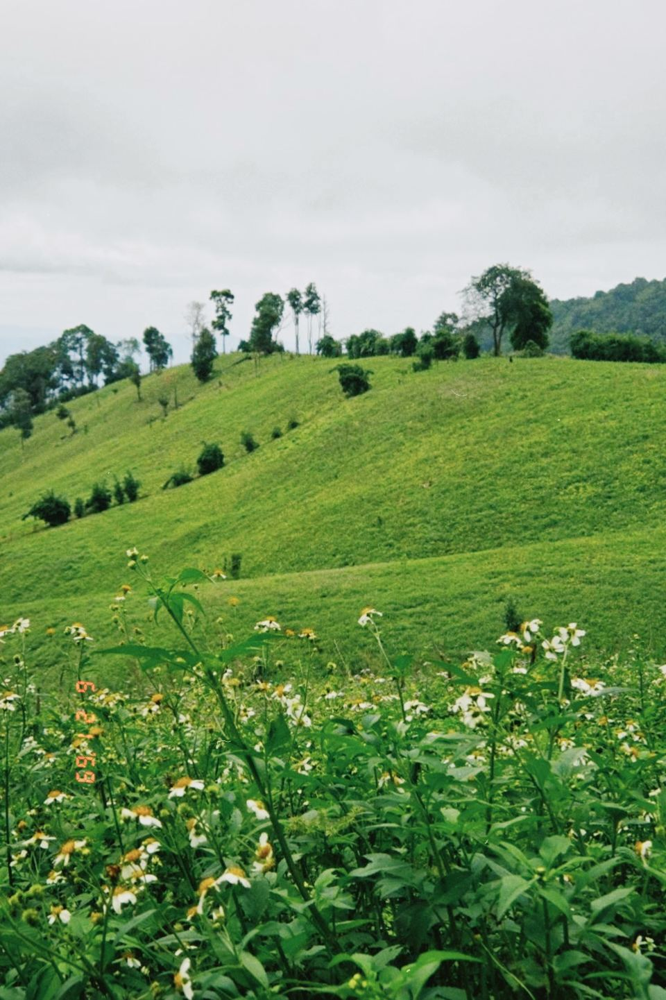
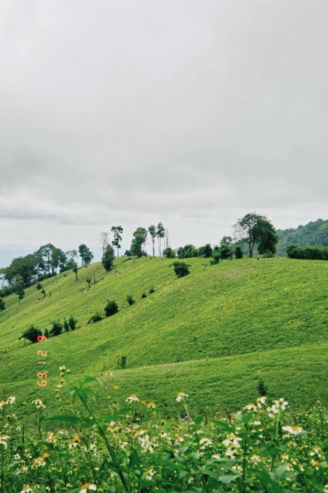
อ่านโพสต์ดอยทูเล-จอวาเลแล้วจองตั๋วทันที ข้อมูลละเอียดกว่าเพจทัวร์ซะอีก
ชอบที่เล่าแบบไม่ปรุงแต่ง มีทั้งเรื่องดีและเรื่องที่เดินทางแบบไม่ได้วางแผนจริงๆ
รูปสวยจนอยากซื้อตั๋วบินตามทันที รอตอนต่อไปอยู่นะ